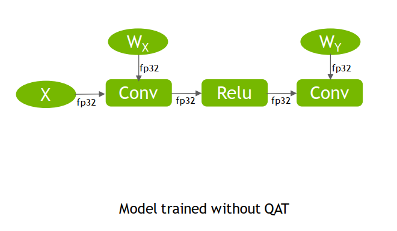
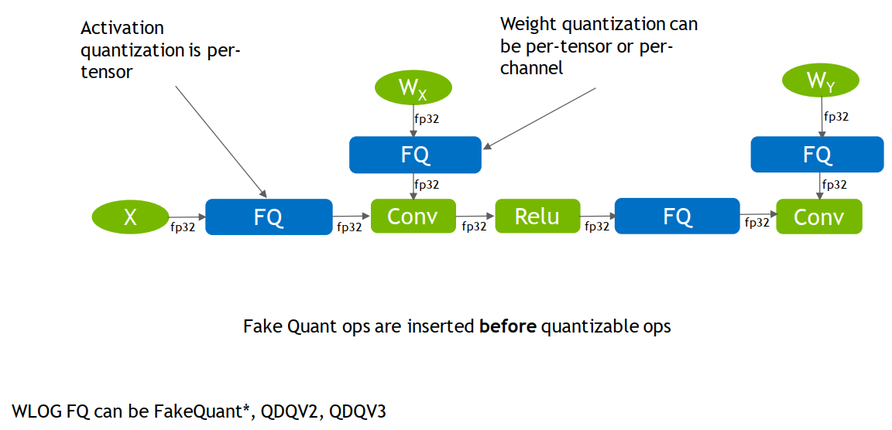
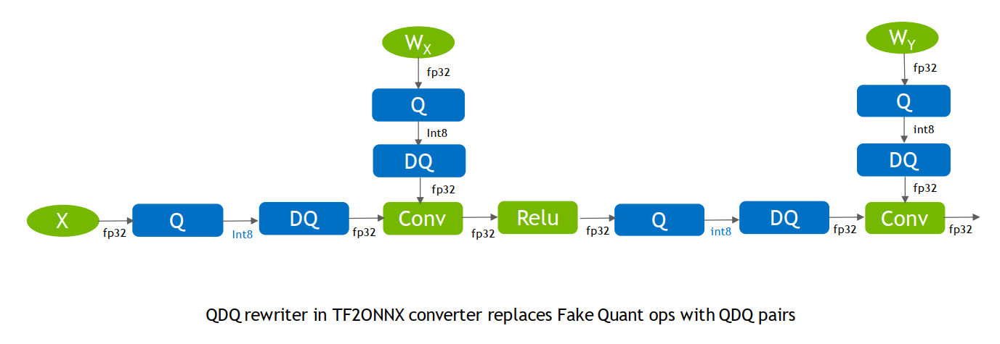
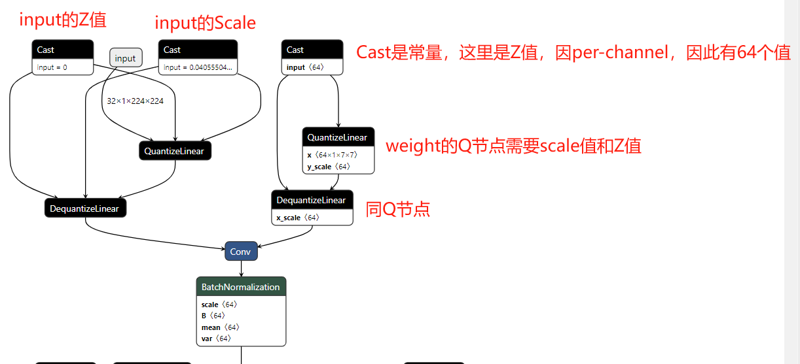
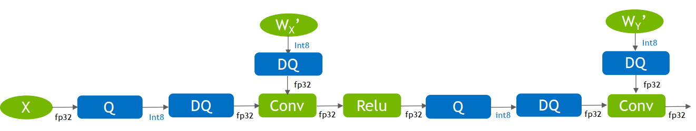
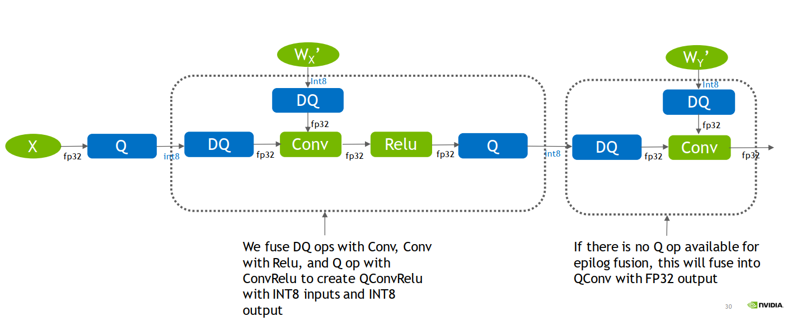
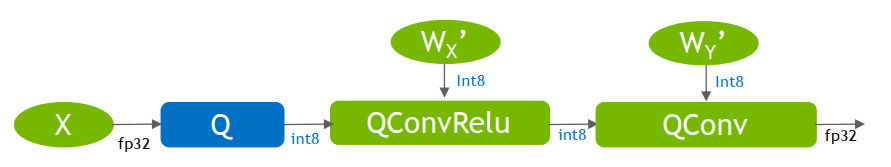

12.8 QAT 量化实践
前言
上一小节介绍了PTQ量化，本节介绍另外一种重要量化方法——QAT（quantization aware training，感知量化训练）。
本节将从QDQ节点出发，深入了解QAT的量化过程，然后基于QAT进行ResNet50的量化及性能、效率评估。
QAT基础概念
再回顾上上小结QAT与PTQ的区别。
PTQ（Post-training quantization，训练后量化），是不需要训练数据（带标签的数据），通常采用小部分数据（不需要标签）进行模型激活值校准，统计激活值的分布，然后计算动态范围，再计算量化scale和Z值；对于weight和bias直接根据模型权重数据进行量化。
QAT(Quantization-aware training，量化感知训练) ，是需要训练数据，并需要在训练阶段插入伪量化层，训练得到带QDQ节点的模型，然后在量化时采用QDQ节点进行量化，通常可以得到比PTQ更高的精度。
- QDQ（quantize节点、dequantize节点）节点是QAT的灵魂，是一个量化节点和反量化节点，可在训练时进行迭代优化，思想是在训练的时候获得一个好的Q节点，它的scale和Z值是比较好的scale和Z值，为什么说它得到的值比较好呢？因为这些值可通过DQ节点恢复出更接近真实值的数据，因此认为训练阶段获得的Q节点中的scale和Z值是较好的选择。

伪量化节点
刚接触量化时，伪量化是较难理解的，伪量化的思想是在训练时模拟量化带来的误差，通过反向传播来对抗误差带来的精度下降，从而得到一个较好的scale和Z值。
具体可参考Nvidia的PPT《toward-int8-inference-deploying-quantization-aware-trained-networks-using-tensorrt》
下图是一个常规fp32的运算过程，接下来将逐步讲解QAT过程。

第一步，插入QDQ（fake quant ops）节点。
插入QDQ的地方即需要量化的地方，回顾上上小结，需要量化的通常是weight、bias和activation，因此有以下4个节点需要量化：
X：可看成第一个activation，因此是需要量化的
Wx：conv1的权重
Relu：之所以在Relu而不是conv1之后，是因为Relu是线性的，可以合并它两，在Relu后做FQ即可。
Wy：conv2的权重


第二步，训练导出ONNX，最终得到scale和Z值。

第三步，在TensorRT中对计算图进行优化
- 常量的折叠：如权重的Q节点可与权重合并，无需在真实推理中由fp32的权重经过scale和Z变为int8的权重

op融合：将DQ信息融合到算子（如图中conv）中，通过op融合，模型计算将变为真实的int8输入、int8输出


于TensorRT是如何做op融合的，暂时找不到相关资料，暂且略过。
思想大概能理解，QConvRelu是吸收了DQ节点的信息，改变weight的数值，这样能更好的计算int8与int8的卷积。
通过以上案例可知conv2输出的是fp32，因为它没有插入QDQ，而conv1输出的是int8，因为插入了QDQ。
这点可以让我们在量化时根据需要，自定义插入QDQ，使得需要高精度输出的地方保持fp32。大意如下图所示

总结一下，QAT的过程：
- 插入QDQ
- 训练，得到scale和Z值，导出onnx模型
- TensorRT图优化、算子融合，导出engine，算子融合中将DQ信息注入op中，使得op接收int8，输出int8，从而提升了运算速度。
ResNet50 QAT 实践
接下来进行QAT实践，初识量化时，一直认为QAT比PTQ繁琐，因为QAT需要训练，而PTQ直接校准就好了。但是，在代码实现上，QAT反而比PTQ简单许多。
流程分析
首先，分析QAT的实现流程步骤：
- 第一步，初始化pytorch_quantization，将pytorch的模块替换掉，这一步pq库已经封装好了，只需要一行代码quant_modules.initialize()
- 第二步，创建模型、加载训练权重
- 第三步，常规训练步骤
- 第四步，保存成ONNX模型和pth模型
由此可知，只是在常规训练流程的代码中，插入quant_modules.initialize() 即可。
当然，在QAT训练和常规训练不一样，学习率通常要小100倍，同时可以用余弦下降法，逐步下降学习率。
TensorRT文档中给了一些QAT的建议：
Usually, it doesn’t need to fine tune very long. We usually use around **10% of the original training schedule**, starting at **1% of the initial training learning rate**, and a cosine annealing learning rate schedule that follows the decreasing half of a cosine period, down to 1% of the initial fine tuning learning rate (0.01% of the initial training learning rate).
代码说明
同样的，代码位于chapter-8/01_classification中，代码整体与训练代码train_main.py保持一致，其中删减了一些不必要的日志记录代码段。
同时修改了学习率调整方法，以及增加ONNX模型导出。
这里采用4epoch，lr=0.001*0.01进行训练，代码直接运行即可：python resnet50_qat.py
日志如下：
Epoch: [000/005] Train Loss avg: 0.1086 Valid Loss avg: 0.1770 Train Acc@1 avg: 96.1009 Valid Acc@1 avg: 93.4295
Epoch: [001/005] Train Loss avg: 0.0786 Valid Loss avg: 0.1819 Train Acc@1 avg: 97.2477 Valid Acc@1 avg: 93.4295
Epoch: [002/005] Train Loss avg: 0.0773 Valid Loss avg: 0.1742 Train Acc@1 avg: 97.3624 Valid Acc@1 avg: 92.9487
Epoch: [003/005] Train Loss avg: 0.0735 Valid Loss avg: 0.1771 Train Acc@1 avg: 97.0183 Valid Acc@1 avg: 93.5897
Epoch: [004/005] Train Loss avg: 0.0633 Valid Loss avg: 0.1704 Train Acc@1 avg: 97.9740 Valid Acc@1 avg: 93.4295
可以看到，Accuracy基本稳定在93.5上下，最优为93.58，相较于原始的94.3，掉了不到1个百分点，比PTQ稳定以及性能更优。
效率对比
得到onnx模型，下面比较fp32、PTQ量化和QAT量化，三者的时延和吞吐量。
可以看到PTQ和QAT在效率上是一样的。
时延(中位数) ms：
| fp32 | PTQ int8 | QAT int8 | |
|---|---|---|---|
| bs=1 | 1.84 | 1.01（↓46%） | 1.07（42%） |
| bs=32 | 26.79 | 15.4（↓43%） | 15.4（↓43%） |
吞吐量(FPS)
| fp32 | PTQ int8 | QAT int8 |
|---|---|---|
| 524 | 860（↑64%） | 817 |
| 37.1*32=1187 | 64.5*32=2064（↑73.9%） | 64.4*32 = 2060（↑73.8%） |
FP32\ptq\qat 三种模型的对比指令如下：
trtexec --onnx=resnet_50_fp32_bs1.onnx
trtexec --onnx=resnet_50_fp32_bs32.onnx
trtexec --onnx=resnet_50_ptq_bs1_data-num512_percentile_91.03%.onnx --int8
trtexec --onnx=resnet_50_ptq_bs32_data-num512_percentile_91.03%.onnx --int8 --saveEngine=resnet_ptq_int8.engine
trtexec --onnx=resnet_50_qat_bs1_93.43%.onnx --int8
trtexec --onnx=resnet_50_qat_bs32_93.43%.onnx --int8
注1：在使用trtexec时，看到了这样的日志，随后尝试了加上 --fp16，整体吞吐量又提升了~40%（相较于fp32提高140%），这或许是将fp32变为fp16带来的效率提升？
[09/29/2023-16:20:37] [I] FP32 and INT8 precisions have been specified - more performance might be enabled by additionally specifying --fp16 or --best
trtexec --onnx=resnet_50_qat_bs32_93.43%.onnx --int8 --best
trtexec --onnx=resnet_50_qat_bs32_93.43%.onnx --int8 --fp16
注2：在新电脑里又看到了这样的warning，尝试使用--useCudaGraph ，可以提高吞吐。尝试之后，发现吞吐从1200 提升到了1600，看来trtexec里的提示信息非常有帮助！ [04/04/2024-20:55:04] [W] Throughput may be bound by Enqueue Time rather than GPU Compute and the GPU may be under-utilized. [04/04/2024-20:55:04] [W] If not already in use, --useCudaGraph (utilize CUDA graphs where possible) may increase the throughput.*
小结
本节回顾了QAT和PTQ的区别，同时介绍了QDQ（伪量化算子：量化和反量化）在训练、推理时的变化，最后通过代码实现QAT，并对比了性能和效率变化。
到这里，量化的基础就结束了，模型量化的内容远不止这些，模型量化还有更高级的内容，例如逐层精度损失分析、逐层插入/取消量化节点、自定义量化算法。
想要深入研究模型加速/量化的朋友，可以进一步学习其它资料,这里推荐一些学习量化用到的资料：
- TRT int8量化文档：https://docs.nvidia.com/deeplearning/tensorrt/developer-guide/index.html#working-with-int8
- TRT范例代码：https://github.com/NVIDIA/TensorRT/blob/main/quickstart/quantization_tutorial/qat-ptq-workflow.ipynb
- pytorch-quantization：https://github.com/NVIDIA/TensorRT/tree/main/tools/pytorch-quantization
- nvidia int8 QAT量化介绍：https://developer.nvidia.com/blog/achieving-fp32-accuracy-for-int8-inference-using-quantization-aware-training-with-tensorrt/
- yolov6 量化工程范例：https://tech.meituan.com/2022/09/22/yolov6-quantization-in-meituan.html
- 老潘的TRTv8量化入门博客：https://zhuanlan.zhihu.com/p/479101029
- B站量化系列教程-ZOMI酱：https://www.bilibili.com/video/BV1VD4y1n7AR/?spm_id_from=333.788&vd_source=19b783e279d4d4ceff5b927f27ea6aa3
- B站量化系列教程-手写AI：https://www.bilibili.com/video/BV18L41197Uz/?spm_id_from=333.337.search-card.all.click&vd_source=19b783e279d4d4ceff5b927f27ea6aa3
- MIT的TinyML-第六节：MIT-TinyML-Lec06-Quantization-II
下一小节，将利用本章学习的TensorRT知识，进行YOLOv8的量化实践，学习优秀开源代码的工程化过程。